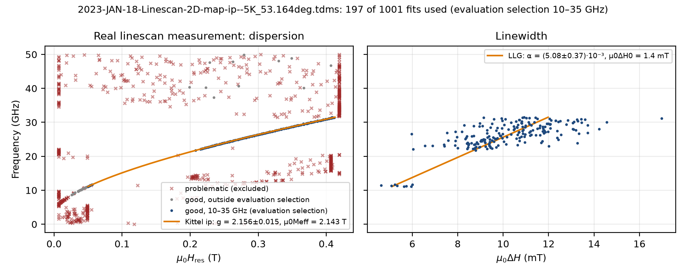

Outliers, projects, settings, saving¶
Outliers / ignore (Ctrl+M in the color plot, Ctrl+I for the current fit, or in the Kittel window Ctrl+K): point removed from Kittel/LLG, plots and global parameters (gray, status ignoriert); single fit kept; column ausreisser in export; panel Re-include; Ctrl+Z.
Kittel window: toolbar Select (click toggles a point, box adds), full view, pan, zoom. Hide selection (Del) applies to main window/color plot (gray; per mode). Show hidden points + Show selection re-includes; Esc clears the selection.

Project (File → Save project, JSON): source, channel mapping, evaluation selection, γ, windows, zones, corridors (per mode, with results of modes 2…n), outliers, rating per fit, unfitted placeholders, number of modes, physical parameters, processing chain, programm. Loading = re-read TDMS + recompute all fits deterministically. Never saved: zoom, window layout.
Auto-backup: 15 s after every change and on exit (File → Restore auto-backup).
Settings (File → Settings): physical parameters, processing chain, display, export columns, region fit options → *.polderfit-einstellungen.json; Save as default stores them in the config directory (Windows %APPDATA%\PolderFit, Linux ~/.config/polderfit, macOS ~/Library/Application Support/PolderFit; env POLDERFIT_KONFIG), loaded at start.
Save / export: Save everything (Ctrl+Shift+S) writes selected parts with a common base name: project, Excel, CSV, Kittel/LLG (Excel + CSV + PNG/PDF), color plot image/matrix, TDMS, settings. Excel/CSV contain all parameters in column groups (Export columns): resonance field and linewidth in T and mT, α, amplitude/phase, background, quality, window, status/rating, temperature; one sheet Einzelfits_M;, decimal comma).
speichere_sitzung(stapel, "sitzung.json", physik=p.als_dict(), verarbeitung=kette.als_dict(), korridore=korridore)
daten = lade_sitzung("sitzung.json")
ds = lade_tdms(daten["quelle"], zuordnung={r: tuple(p) for r, p in daten["zuordnung"].items()}, layout=daten["format_typ"])
stapel = stelle_stapel_wieder_her(daten, ds)
exportiere_excel(stapel.ergebnisse, "fits.xlsx", spalten=["kern", "status"], nur_gefittete=True)